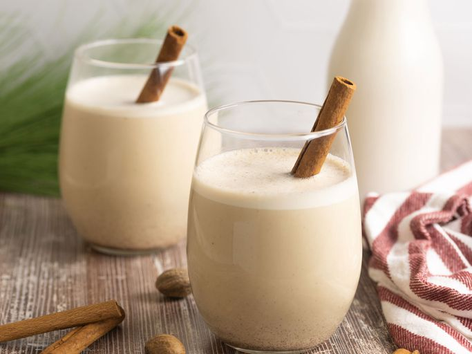

Coquito

Coquito is a creamy, tropical, Puerto Rican holiday drink with tons of coconut flavor.
It's made with both evaporated and condensed milk, cream of coconut, spices, rum, and in this version, egg yolks.
It is always requested at my holiday gatherings. Sometimes I hide it in the fridge to keep for myself!
Serve in glass cups and sprinkle with more cinnamon if desired.
Feliz Navidad!
Ingredients
- 1 (12 fluid ounce) can evaporated milk:This coquito recipe starts with a can of evaporated milk.
- 2 large egg yolks, beaten:Two beaten egg yolks contribute to the rich, thick, and creamy texture.
- 1 (14 ounce) can cream of coconut:Canned cream of coconut lends richness and gives the coquito its signature coconut flavor.
- 1 (14 ounce) can sweetened condensed milk:Sweetened condensed milk makes everything more delicious, including this coquito recipe!
- ½ cup white rum:The best rum for coquito is white Puerto Rican rum, such as Bacardi. In a pinch, any pleasant-tasting white rum will do.
- ½ cup water:Water thins the thick and creamy mixture, making it super pourable.
- 1 teaspoon vanilla extract:A teaspoon of vanilla extract takes the flavor up a notch.
- ½ teaspoon ground cinnamon:Cinnamon and cloves add warmth and coziness.
- ¼ teaspoon ground cloves:Cinnamon and cloves add warmth and coziness.
- prova: sto provando cose a caso non leggermi perfavore ahahaha
Steps
- Combine evaporated milk and egg yolks in the top of a double boiler over simmering water.
Cook over the simmering water, stirring constantly, until mixture is thick enough to coat the back of a spoon, and reaches a temperature of 160 degrees F (71 degrees C).
- Transfer mixture to a blender. Add cream of coconut, sweetened condensed milk, rum, water, vanilla, cinnamon, and cloves; blend until combined, about 30 seconds.
- Pour into sterilized glass bottles and store in the refrigerator; serve cold or over ice, if desired.